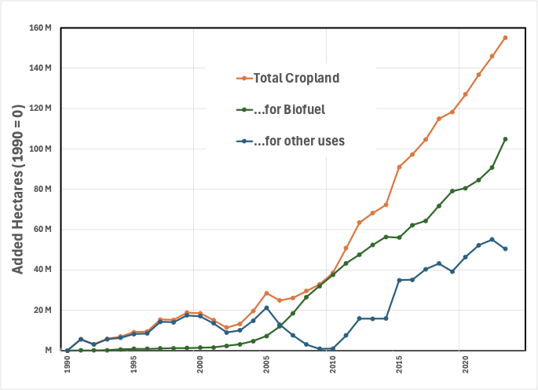
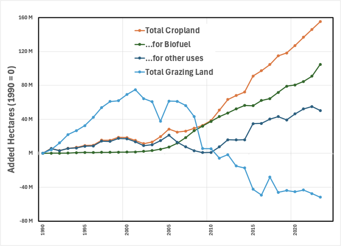

TL;DR: iLUC unfairly singles out biofuels for their impact on land use while ignoring the broader implications of human activities and the fundamentally cyclical nature of carbon in the environment.
Let’s address the first testable assumption of iLUC quantification:
Given the increased production of biofuels over the past few decades, are there measurable changes in land use that support the one-for-one substitution assumed by iLUC?
To answer this question, compare two pieces of historical data as a series of time points.
The amount of biofuel we use can be derived roughly from the land under cultivation allocated for biofuel. For this exercise, I’ll consider only liquid fuels like fuel ethanol and biodiesel. There will be other uses, such as electricity generation from biomass, but these two fuels compete most directly with conventional agriculture for food production.
The area of land under cultivation.
I have neither the time nor the inclination to make this an exhaustive exercise; I am mainly interested in determining whether the iLUC assumptions are plausible based on available data.
iLUC advocates assert that the land under cultivation increases proportionally as more land is used for biofuel production. Any comparison will be flawed, but since I haven’t actually peeked to see the answer, it’ll be educational for you and me both. I believe it’s a worthwhile comparison since if an increase in biofuels isn’t correlated to a proportional (and significant) increase in land use for agriculture, then iLUC is fatally flawed, environmentalist claptrap.
So, at a crude level, this is what I observe:

This exercise showed me a few things. First, the agricultural yield of biofuels is a critically important assumption, but it is an enormously variable number that is easily adjustable. To generate the graph, I used averaged values for corn and soy, ubiquitous crops in the US and ones I’m familiar with, to convert petajoules of biofuels into hectares used to produce them. But, depending on my chosen value, I could make the graph tell a story of extreme impact or no consequence. From an interpretive viewpoint, the relationship between land use and energy is not a physical constant measured precisely like, say, the speed of light.
Regardless of that assumption, more land is being converted to agriculture than can be accounted for by the increased use of biofuels. This is probably the consequence of a growing population, so I’d argue that every new human should also come with an iLUC value! But it doesn’t render the concept of iLUC moot. Biofuels seem to increase the amount of land under cultivation more rapidly than population growth.
From a practical perspective, it’s essential to appreciate that biofuels and food don’t necessarily conflict with one another: It’s not an either-or proposition; It’s not as simple as “Food vs. fuel.” For example, most corn is grown for animal feed. Still, when this feedstock is diverted to fuel, there are valuable co-products: The residue from corn ethanol plants (distiller’s dried grains and solids, or DDGS) is sold as a high-nutrition animal feed supplement after the starch is removed for fermentation.
Finally, the concern about the climate impact of iLUC arises from a fundamental flaw in carbon accounting. Regardless of whether a crop is used as a substitute for gasoline or eaten by a person or animal, the carbon in the crop is returned to the atmosphere! The only issue is that if it’s used as a fuel substitute, we count carbon dioxide as an “emission”, while if it’s eaten, it’s considered “renewable”. I haven’t done the calculation, but I imagine that the iLUC of riding a horse is probably higher than driving a car powered by biodiesel, particularly if the power use is factored in.
To that end, look at another tabulated land use: Grazing of livestock. If that is plotted as well, here’s what we see:

Hmm. So it looks as if some of the cropland (generally, active agriculture) comes from converting grazing land (generally, passive agriculture). The bottom line: It’s tough to tell, but adding detail to a model will only make it more dependent on our assumptions.
Let’s finish this: There is a complex relationship between biofuel production and land use, and an iLUC value has some theoretical validity. But everything humans do on Earth will indirectly affect land use, too, so, in my opinion, biofuels are being unfairly singled out based on environmentalist theology. In particular, by labeling the carbon dioxide we produce through motorized transportation “bad” and the carbon dioxide we exhale “good”, we’re missing the fundamental fact that there can be no difference in the outcome.